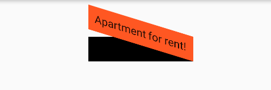
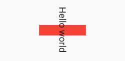

5.3 变换（Transform）
Transform可以在其子组件绘制时对其应用一些矩阵变换来实现一些特效。Matrix4是一个4D矩阵，通过它我们可以实现各种矩阵操作，下面是一个例子：
Container(
color: Colors.black,
child: Transform(
alignment: Alignment.topRight, //相对于坐标系原点的对齐方式
transform: Matrix4.skewY(0.3), //沿Y轴倾斜0.3弧度
child: Container(
padding: const EdgeInsets.all(8.0),
color: Colors.deepOrange,
child: const Text('Apartment for rent!'),
),
),
)
运行效果如图5-3所示：

关于矩阵变换的相关内容属于线性代数范畴，本书不做讨论，读者有兴趣可以自行了解。本书中，我们把焦点放在Flutter中一些常见的变换效果上。另外，由于矩阵变化时发生在绘制时，而无需重新布局和构建等过程，所以性能很好。
5.3.1 平移
Transform.translate接收一个offset参数，可以在绘制时沿x、y轴对子组件平移指定的距离。
DecoratedBox(
decoration:BoxDecoration(color: Colors.red),
//默认原点为左上角，左移20像素，向上平移5像素
child: Transform.translate(
offset: Offset(-20.0, -5.0),
child: Text("Hello world"),
),
)
效果如图5-4所示：
5.3.2 旋转
Transform.rotate可以对子组件进行旋转变换，如：
DecoratedBox(
decoration:BoxDecoration(color: Colors.red),
child: Transform.rotate(
//旋转90度
angle:math.pi/2 ,
child: Text("Hello world"),
),
)
注意：要使用math.pi需先进行如下导包。
import 'dart:math' as math;
效果如图5-5所示：

5.3.3 缩放
Transform.scale可以对子组件进行缩小或放大，如：
DecoratedBox(
decoration:BoxDecoration(color: Colors.red),
child: Transform.scale(
scale: 1.5, //放大到1.5倍
child: Text("Hello world")
)
);
效果如图5-6所示：
5.3.4 Transform 注意事项
-
Transform的变换是应用在绘制阶段，而并不是应用在布局(layout)阶段，所以无论对子组件应用何种变化，其占用空间的大小和在屏幕上的位置都是固定不变的，因为这些是在布局阶段就确定的。下面我们具体说明：Row( mainAxisAlignment: MainAxisAlignment.center, children: <Widget>[ DecoratedBox( decoration:BoxDecoration(color: Colors.red), child: Transform.scale(scale: 1.5, child: Text("Hello world") ) ), Text("你好", style: TextStyle(color: Colors.green, fontSize: 18.0),) ], )运行效果如图5-14所示：
由于第一个
Text应用变换(放大)后，其在绘制时会放大，但其占用的空间依然为红色部分，所以第二个Text会紧挨着红色部分，最终就会出现文字重合。 -
由于矩阵变化只会作用在绘制阶段，所以在某些场景下，在UI需要变化时，可以直接通过矩阵变化来达到视觉上的UI改变，而不需要去重新触发build流程，这样会节省layout的开销，所以性能会比较好。如之前介绍的
Flow组件，它内部就是用矩阵变换来更新UI，除此之外，Flutter的动画组件中也大量使用了Transform以提高性能。
思考题：使用
Transform对其子组件先进行平移然后再旋转和先旋转再平移，两者最终的效果一样吗？为什么？
5.3.5 RotatedBox
RotatedBox和Transform.rotate功能相似，它们都可以对子组件进行旋转变换，但是有一点不同：RotatedBox的变换是在layout阶段，会影响在子组件的位置和大小。我们将上面介绍Transform.rotate时的示例改一下：
Row(
mainAxisAlignment: MainAxisAlignment.center,
children: <Widget>[
DecoratedBox(
decoration: BoxDecoration(color: Colors.red),
//将Transform.rotate换成RotatedBox
child: RotatedBox(
quarterTurns: 1, //旋转90度(1/4圈)
child: Text("Hello world"),
),
),
Text("你好", style: TextStyle(color: Colors.green, fontSize: 18.0),)
],
),
效果如图5-8所示：

由于RotatedBox是作用于layout阶段，所以子组件会旋转90度（而不只是绘制的内容），decoration会作用到子组件所占用的实际空间上，所以最终就是上图的效果，读者可以和前面Transform.rotate示例对比理解。